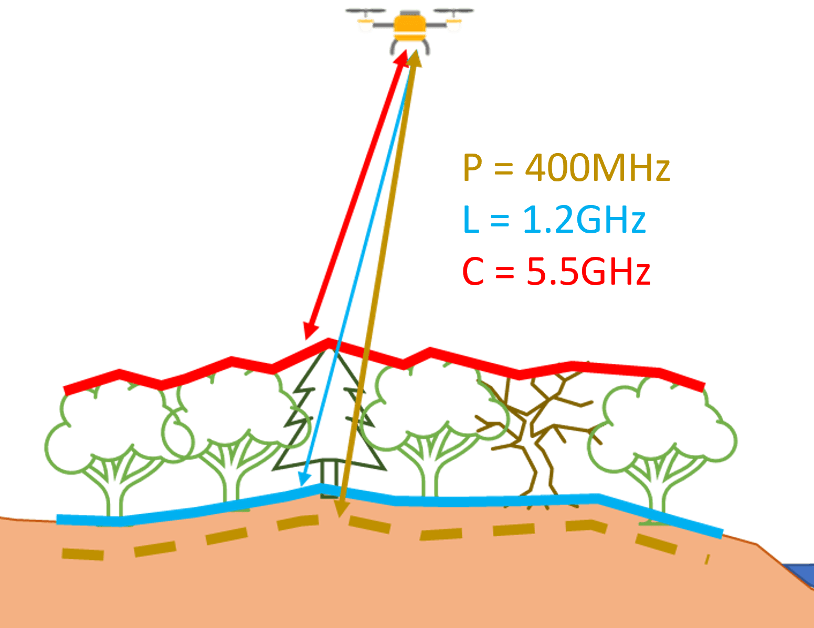
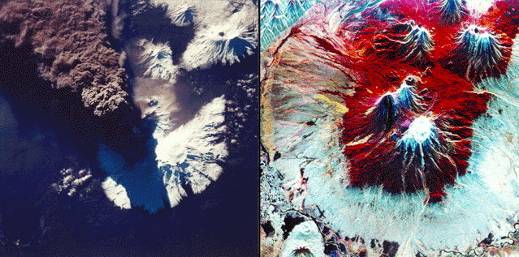
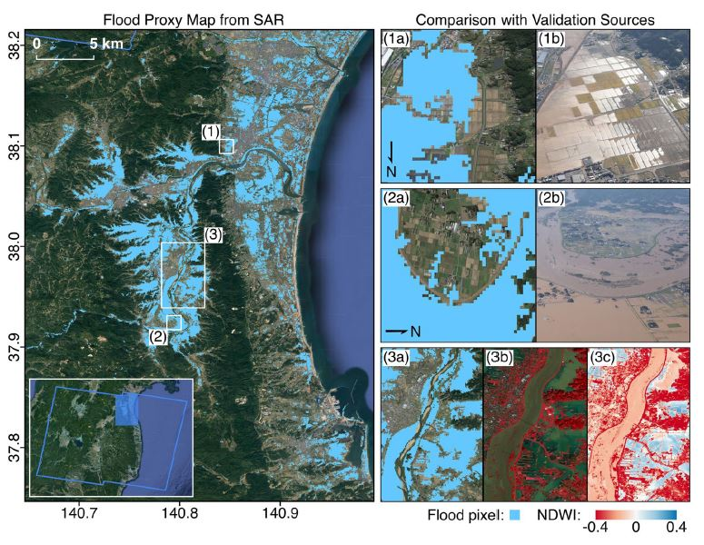
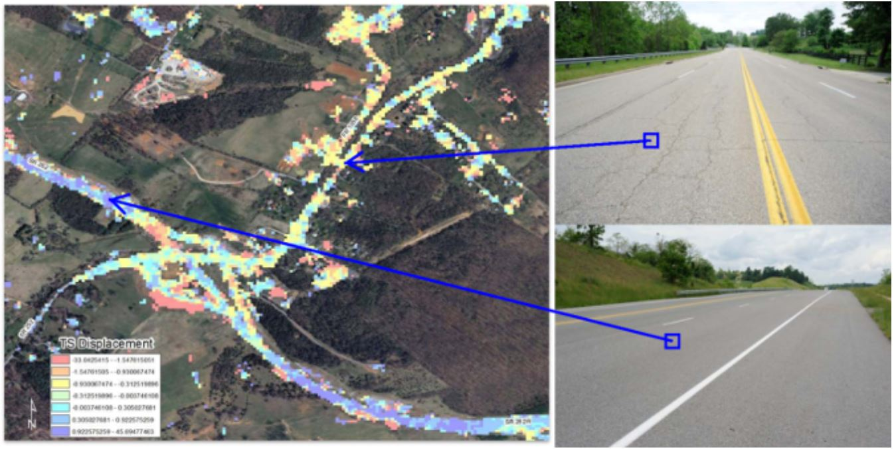
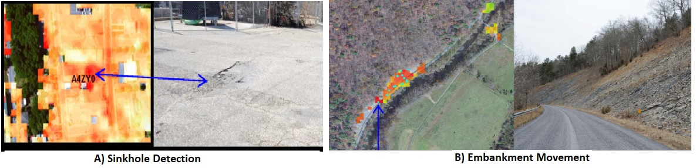

9 Week 9 - SAR
9.1 Summary
9.1.1 SAR:
What is the fuss about Synthethic Aperture Radar aka SAR. Let us know some facts about SAR:-
- Synthetic Aperture RADAR (SAR) became a well-established and powerful remote sensing technology used worldwide for several applications thanks to the possibility of sensing the Earth’s surface at night and day, and in any weather condition Synthetic Aperture Radar (SAR) Techniques and Applications (2020).
- Synthetic Aperture Radar (SAR) is a form of active data collection (Earth Science Data Systems (2020)).
- SAR sensors generate their own energy and measure the amount of energy reflected back from the Earth’s surface.
- Unlike optical imagery, which is akin to interpreting a photograph, SAR data interpretation requires a different approach. The process will use multiple pulsed electromagnetic frequencies with different wavelengths in combinations to build up images of the target survey area. The different frequencies can have the ability to penetrate vegetation/canopy and even soils (“Synthetic Aperture Radar” (n.d.)).
- SAR signals are responsive to surface characteristics such as structure and moisture rather than visual appearance.
- SAR data can be used for various applications including agriculture, forestry, urban planning, disaster monitoring, and military surveillance.
- SAR technology has both civilian and military applications, with satellites and aircraft being common platforms & now drones as well contribute to the SAR data collection.
- SAR data can provide valuable insights into changes in the Earth’s surface over time, aiding in environmental monitoring and resource management.

One of the early uses of SAR over the Optical can be seen in the figure below & it is one of the early SAR images. This was taken by astronauts onboard the space shuttle endeavor on Sept 30, 1994.The image on left is a optical image & the right is a radar image which shows the flow of lava and it penetrates the dark ash & smoke coming from erupting lava, thus giving us the view of the erupting volcano.

9.2 Applications
SAR has been used for many application like land cover changes, deforestation, for monitoring disaster episodes (floods, earthquakes, landslides,etc), for monitoring crop yield, for monitoring glaciers & in human aid. One of the research which came across during my readings was Flood & damage mapping in Japan by Tay et al. (2020) . in this study they used SAR for deriving at a flood map using change detection approach.The validation was carried by aerial imagery & other optical sources.

Another application of SAR, that was quite interesting to me because of my Civil Engineering background, was the use of SAR in monitoring Transport Infrastructure Edward J Hoppe et al. (2016). In this the researchers selected the COSMO-SkyMed satellite system operated by the Italian Space Agency & it provides a coverage of 3-m pixel resolution when operated in “HIMAGE” mode, effectively providing time-displacement data at the centroids of consecutive 3 × 3 m2 areas on the Earth’s surface.

Satellite-based radar systems are now capable of detecting surface deformation in the order of a few millimeters, due to a technique known as interferometric synthetic aperture radar (InSAR), which has become a standard tool for the remote sensing of displacements.In this study they use InSAR technology to be able to detect sinkholes near the road infrastructure, movements around road embankments, potholes & pavement distress.

9.3 Reflections
I have been quite facinated by this lecture and I must say, the breadth of applications that SAR Technology offers is truly impressive. The sheer potential it holds across diverse fields is both inspiring and humbling.. I’m planning to use SAR for my Crop Yield Prediction project and will continue to explore its uses and applications.
At the end, I really feel happy and content with the work that I have done through this learning diary despite the time I had lost through a family emergency. But, I would like to congratulate Dr Andrew MacLachlan for structuring the course so well and for this unique way of assessment. It’s been satisfying, interesting, and I’ve learned a lot. Thanks, Andy.